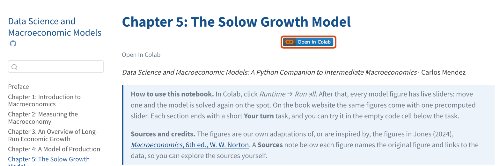
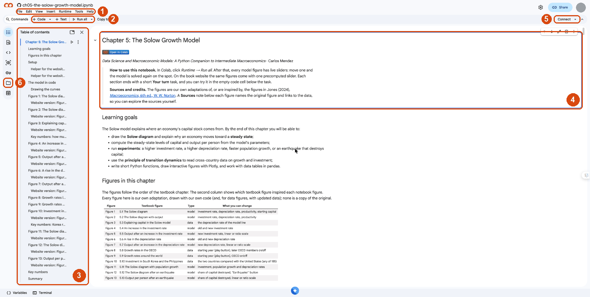
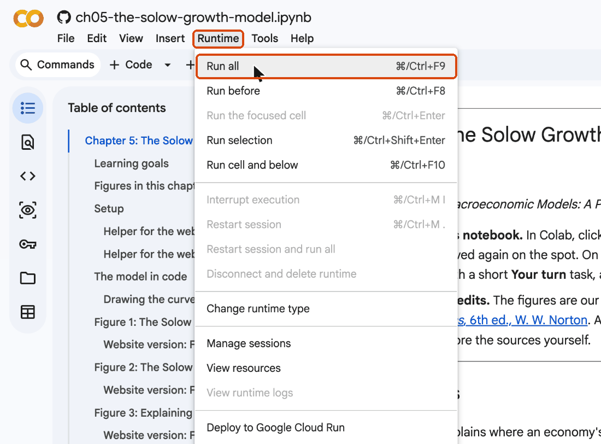
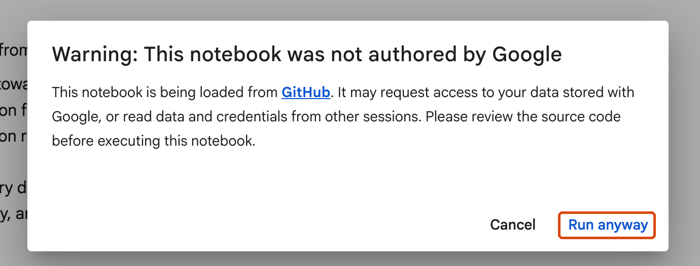
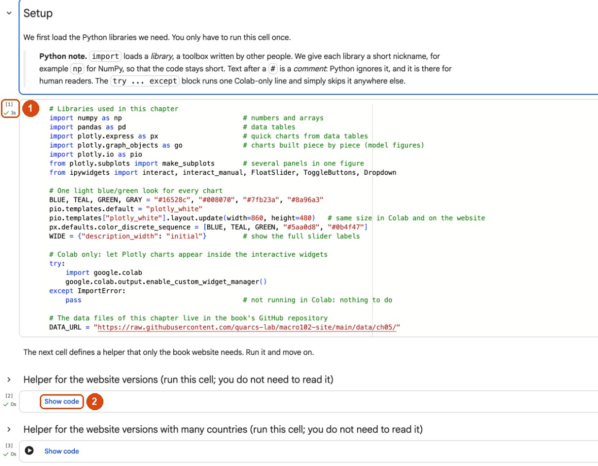
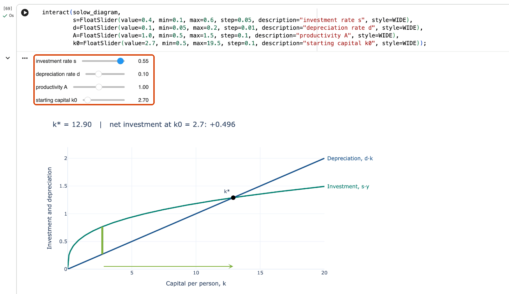
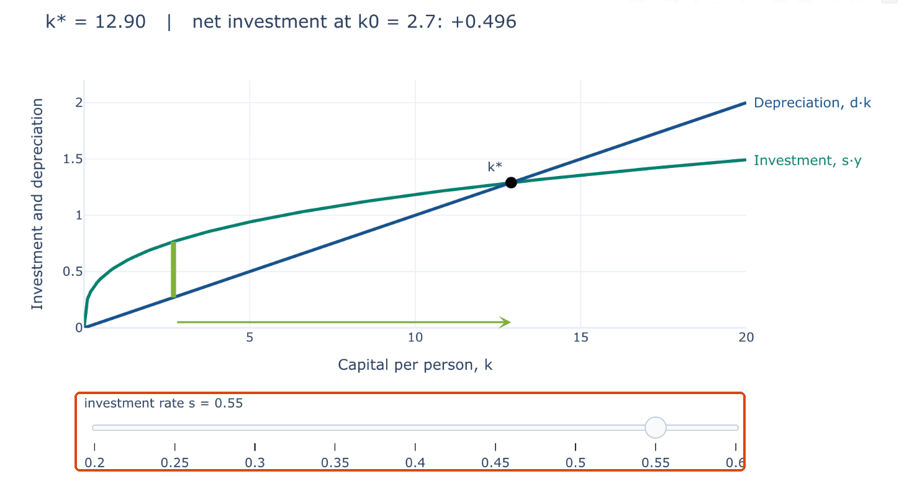
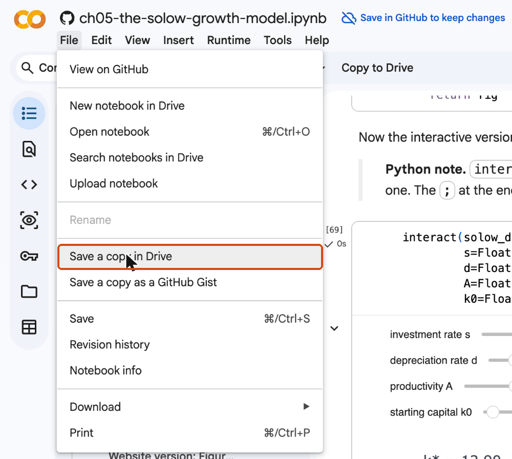
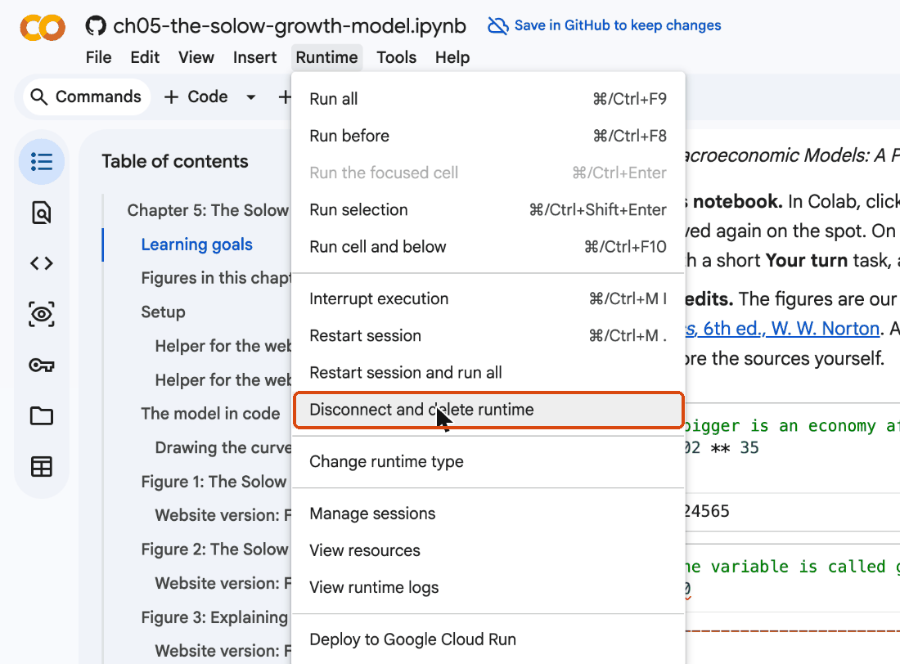
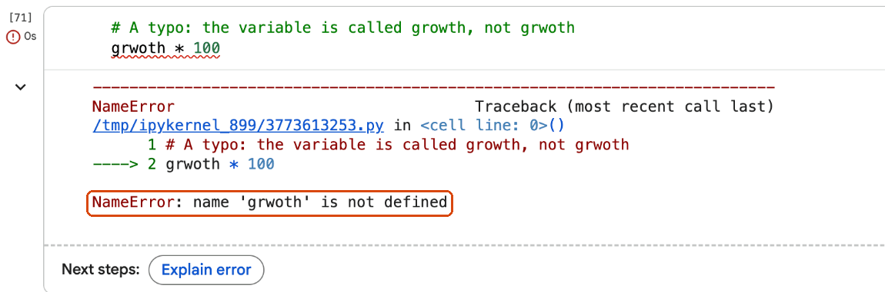

One line of Python shows that 2 percent growth doubles income in 35 years
1.02**35
1.9998895526624565
An economy growing 2% a year, after 35 years: twice as large. That is the rule of 70, computed rather than memorized. By the end of today you will write lines like this, load real data and draw live charts, all in a web browser.
Today: five steps from zero to a small data project
Colab. Where do the book’s notebooks run, and how do you use one?
Python building blocks. Numbers, variables, lists, loops, if, functions, errors.
NumPy and pandas. Math on arrays; reading, filtering, reshaping and merging data tables.
Plotly and ipywidgets. Interactive charts and the sliders of the model figures.
A mini project. Which economies grew fastest after 1990?
Five kinds of cards guide you through the code
x =10x *2
20
What does this cell show?
Open a notebook and run it.
Code in a dark box, its output with a green rule, a Predict card before an output is revealed, a Try it in Colab exercise, and a Common mistake card.
Colab: notebooks in the browser
Act I
A notebook mixes text, code and results on one page
Text
Explanations, headings and equations such as \(y = \bar{A}k^{1/3}\).
Code
Short Python cells that compute, load data and draw.
Results
Numbers, tables and charts, right below the code that made them.
Change the code, run it again, and the result below it updates.
Colab runs your notebook on Google’s computers, not on your laptop
Your web browsercode → ← resultsColab runtime← CSV filesThe book’s GitHub data
The computer that runs the code is called the runtime. It lives in a Google data centre.
Five reasons the book uses Colab
Nothing to install: Python, NumPy, pandas, Plotly and ipywidgets are already there.
The same setup for everyone: Windows, macOS, Linux or a Chromebook.
Live models: the model figures get sliders; move one and the model is solved again.
Easy to save and share: a copy in Google Drive, shared with a link.
Data straight from the source: files are read from the book’s GitHub repository.
Four limits to keep in mind
The runtime is temporary. Close the notebook or leave it idle, and every variable is forgotten. Runtime → Run all rebuilds everything in seconds.
Edits are not saved automatically in a notebook opened from GitHub: save your own copy first.
Free resources are shared: only a few runtimes at a time. Close yours properly.
You need to be online: the runtime and the data live on the internet.
Closing the tab is not the same as closing the runtime
I closed the browser tab, so my work is saved and the runtime has stopped.
Neither is true. A notebook opened from GitHub is read-only: edits are lost unless you saved a copy in Drive. And the runtime keeps running for a while after the tab closes, using one of your few free slots.
A whole session takes seven steps
Step
What you do
Where
1
Open the notebook
the Open in Colab badge
2
Find your way around
menus, toolbar, contents, cells
3
Run the whole notebook
Runtime → Run all (Ctrl+F9)
4
Accept the warning
Run anyway
5
Read the cells, move the sliders
the model figures
6
Save your own copy
File → Save a copy in Drive
7
Close the runtime
Runtime → Disconnect and delete runtime
Step 1: every chapter page has an Open in Colab badge

Click it: the notebook opens in a new tab. Sign in with a Google account to run it.
Step 2: the Colab window has six parts to know

1 menus · 2 toolbar (+ Code, + Text, Run all) · 3 table of contents · 4 a text cell · 5 Connect · 6 files
Step 3: Runtime → Run all runs every cell from top to bottom

Shortcut: Ctrl+F9 (⌘+F9 on a Mac). Colab connects to a runtime first.
Step 4: a warning reminds you to run only code you trust

The book’s notebooks only read public data files and draw charts: click Run anyway.
Step 5: the number in brackets counts the runs

1: the run number, a tick and the time. 2: a folded helper cell. Run it; you need not read it.
In Colab, moving a slider solves the model again

Investment rate from 0.40 to 0.55: the steady-state capital stock \(k^*\) rises from 8.00 to 12.90.
The book website shows a precomputed version of each live figure

The website cannot run Python: the same chart is computed in advance for a few values and joined by one slider.
The website is for reading; Colab is for doing
Book website
Colab
Read the text and the charts
✓
✓
Hover, zoom, click legends
✓
✓
Move one precomputed slider
✓
✓
Move every slider freely
✓
Change and rerun the code
✓
Step 6: save your own copy before you edit

File → Save a copy in Drive. The copy goes to a “Colab Notebooks” folder and saves as you work.
Step 7: delete the runtime when you are done

Runtime → Disconnect and delete runtime, then close the tab. “Too many sessions”? Runtime → Manage sessions.
Your first session in Colab
Open the Chapter 5 notebook with its badge, run it, and move the investment rate s slider of Fig. 1. Then save a copy in your Drive and delete the runtime.
Code cells run with Shift+Enter; text cells are written in Markdown
Text cells
Markdown: **bold**, *italic*, # Heading, and equations like \(y = \bar{A}k^{1/3}\).
Code cells
Python. Click inside and press Shift+Enter, or click the round ▶ button.
# A code cell: Python works out the expression and shows the result of the last line2+3
5
Only the last line of a cell is shown automatically
print("Hello, Colab!")x =10x *2# the last line: its value is shown below the cell
What appears below this cell: one line, or two? Which ones?
Hello, Colab!
20
Cells run in the order you run them, not the order on the page
interest_rate =0.05# create a variable...
interest_rate *100# ...and use it later
5.0
The notebook remembers every variable you created, in the order you ran the cells.
Run the second cell first: NameError.
The cure: Runtime → Run all, or Run before.
“Run the cell I need” is how most notebook errors start
I opened the notebook and ran the cell with the chart. It says NameError, so the notebook is broken.
The notebook is fine: a cell above it has not run yet, so a variable or a library does not exist. Runtime → Run all fixes it almost every time.
Six keyboard shortcuts cover most of your work
Action
Windows / Linux
Mac
Run the cell and move to the next one
Shift+Enter
Shift+Enter
Run the cell and stay on it
Ctrl+Enter
⌘+Enter
Run all cells
Ctrl+F9
⌘+F9
Run all cells above
Ctrl+F8
⌘+F8
Interrupt a running cell
Ctrl+M I
⌘+M I
Show all shortcuts
Ctrl+M H
⌘+M H
Runtime → Restart session clears every variable. Then run the cells again from the top.
help(...) prints the documentation of any function
help(round)
Help on built-in function round in module builtins:
round(number, ndigits=None)
Round a number to a given precision in decimal digits.
The return value is an integer if ndigits is omitted or None. Otherwise
the return value has the same type as the number. ndigits may be negative.
In a code cell, type a function name and ( and wait: Colab shows the arguments it takes.
Your first code cell
Add a new code cell (+ Code), compute how many hours there are in a year, and run it with Shift+Enter. Then change it to compute the hours in a leap year and run it again.
Act I cheat sheet: Colab
You want to …
Do this
open a chapter
click its Open in Colab badge
run everything
Runtime → Run all (Ctrl+F9)
run one cell
Shift+Enter
fix a NameError after a jump
Runtime → Run before, or Run all
start clean
Runtime → Restart session, then Run all
keep your edits
File → Save a copy in Drive
finish
Runtime → Disconnect and delete runtime
read a function’s manual
help(name)
Python building blocks
Act II
Python works like a calculator
print(7+3, 7-3, 7*3, 7/3) # add, subtract, multiply, divideprint(7//3, 7%3) # whole-number division and its remainderprint(2**10) # a power: 2 to the 10th
What do 7 // 3 and 7 % 3 give? And 2 ** 10?
10 4 21 2.3333333333333335
2 1
1024
** is all you need for compound growth
\[\text{after } t \text{ years at growth rate } g:\qquad y_t = y_0\,(1+g)^t\]
1.02**35
1.9998895526624565
At 2% a year a variable doubles in about 70/2 = 35 years: the rule of 70 of Chapter 3.
In Python, ^ is not a power
To compute 2 to the 10th, I write 2 ^ 10, like in Excel.
In Python the power is **: 2 ** 10 gives 1024. The caret ^ is a different operation on the bits of whole numbers, and 2 ^ 10 quietly gives 8, with no error message.
A variable is a name for a value
y_1990 =47713# U.S. GDP per person in 1990, 2022 dollars (Maddison data, Section A.5)y_2022 =75459# the same in 2022growth_factor = y_2022 / y_1990growth_factor
1.5815186636765661
= means “store the value on the right under the name on the left”.
Names: letters, digits and underscores; no spaces; GDP and gdp are different.
The book follows the textbook’s notation: s, d, A, k_star, y_star.
From the growth factor to the average annual growth rate
\[y_{2022} = y_{1990}\,(1+g)^{32} \quad\Longrightarrow\quad g = \left(\frac{y_{2022}}{y_{1990}}\right)^{1/32} - 1\]
g = growth_factor ** (1/32) -1g
0.014427636896671148
U.S. GDP per person grew about 1.44% a year on average from 1990 to 2022.
= stores a value; == asks a question
if g = 0.02: checks whether the growth rate is 2 percent.
One = assigns, and inside an if it is a SyntaxError. Two == compare and give True or False: g == 0.02.
Every value has a type
country ="United States"# a stringyears =2022-1990# an intg = growth_factor ** (1/ years) -1# a floatis_rich = y_2022 >50000# a bool, the result of a comparisonprint(type(country), type(years), type(g), type(is_rich))
print(f"{country}: GDP per person grew from {y_1990:,.0f} to {y_2022:,.0f} dollars,")print(f"or {g:.2%} a year on average over {years} years.")
What will {g:.2%} show for \(g = 0.014427\ldots\)? And {y_1990:,.0f} for 47713?
United States: GDP per person grew from 47,713 to 75,459 dollars,
or 1.44% a year on average over 32 years.
A list holds values in order, counted from 0
countries = ["United States", "Japan", "China"]print(countries[0], "|", countries[-1], "|", len(countries), "countries")countries.append("India") # add an element at the endcountries
Which country is countries[0]? Which is countries[-1]?
United States | China | 3 countries
['United States', 'Japan', 'China', 'India']
A for loop repeats the indented lines, once per value
# Compound growth, year by year: income grows by 2 percent each yeary =100.0for year inrange(1, 6): y = y *1.02print(f"year {year}: {y:.2f}")
year 1: 102.00
year 2: 104.04
year 3: 106.12
year 4: 108.24
year 5: 110.41
range(1, 6) gives 1, 2, 3, 4, 5. The colon and the four spaces mark the lines inside the loop.
Loops simulate models over time: the Solow model in one line
\[k_{t+1} = k_t + s\,k_t^{1/3} - d\,k_t\]
Each year, capital per person \(k\) grows by investment \(s\,k_t^{1/3}\) …
… and shrinks by depreciation \(d\,k_t\).
With \(s = 0.2\) and \(d = 0.1\), the steady state is \(k^* = (s/d)^{3/2}\).
The loop runs the model for 50 years
s, d =0.2, 0.1# investment rate and depreciation ratek =1.0# capital per person in year 0path = [k] # a list that will hold the whole pathfor t inrange(50): k = k + s * k ** (1/3) - d * k path.append(k)k_star = (s / d) **1.5# the steady state of this model, (s/d)^(3/2)print(f"k after 10 years: {path[10]:.3f}, after 50 years: {path[50]:.3f}")print(f"steady state k* = {k_star:.3f}")
Capital starts at 1, below the steady state of about 2.83. After 50 years, will it be above, below or at \(k^*\)?
Capital rises fast at first, then slows as it nears the steady state
k after 10 years: 1.828, after 50 years: 2.761
steady state k* = 2.828
In the first 10 years \(k\) rises from 1 to 1.828; in the next 40, only to 2.761.
After 50 years it is still just below\(k^* = 2.828\): it approaches, never overshoots.
The principle of transition dynamics of Chapter 5, from a five-line loop.
A loop turns a model’s equation into its whole time path.
if, elif and else choose which lines run
g_percent =1.4# an average growth rate, in percent a yearif g_percent >=3: label ="fast"elif g_percent >=1: label ="moderate"else: label ="slow or negative"print(f"Growth of {g_percent}% a year is {label}.")
Which label does 1.4 get? What about 3.0, and −0.5?
Growth of 1.4% a year is moderate.
A dictionary stores values under names
params = {"s": 0.2, "d": 0.1, "A": 1.0}print(params["s"]) # look up a value by its keyparams["s"] =0.3# change itfor key in params:print(key, "=", params[key])
The first line prints 0.2. What does the loop print for s?
0.2
s = 0.3
d = 0.1
A = 1.0
A function packs an equation under a name
def output(k, A=1.0):"""Output per person in the production model of Chapter 4: y = A k^(1/3)."""return A * k ** (1/3)
def starts the definition; k and A are its arguments.
A=1.0 is a default: leave A out and it is 1.
The text in triple quotes, the docstring, says what the function does.
return sends back the result.
In the chapters, each model equation becomes one short function like this one.
Calling the function: change the arguments, get a new answer
print(output(8)) # k = 8 and the default A = 1print(output(8, A=2.0)) # the same capital with twice the productivity
The cube root of 8 is 2. What do the two lines print?
2.0
4.0
Twice the productivity, twice the output, with the same capital.
The rule of 70 as a function, tried in a loop
def years_to_double(g_percent):"""Rule of 70 (Chapter 3): something growing at g percent a year doubles in about 70/g years."""return70/ g_percentfor g_percent in [1, 2, 3.5, 7]:print(f"growth of {g_percent}% a year: doubles in about {years_to_double(g_percent):.0f} years")
growth of 1% a year: doubles in about 70 years
growth of 2% a year: doubles in about 35 years
growth of 3.5% a year: doubles in about 20 years
growth of 7% a year: doubles in about 10 years
import loads a library: the rule of 70 against the exact answer
import mathfor g_percent in [2, 7]: exact = math.log(2) / math.log(1+ g_percent /100) rule = years_to_double(g_percent)print(f"At {g_percent}% a year: exactly {exact:.1f} years; rule of 70: {rule:.1f} years")
At 2% a year: exactly 35.0 years; rule of 70: 35.0 years
At 7% a year: exactly 10.2 years; rule of 70: 10.0 years
The exact doubling time is \(\ln 2 / \ln(1+g)\). The rule is very close at low growth and a little off at high growth.
Read an error message from the bottom up

The last line names the error and what went wrong: name 'grwoth' is not defined.
The arrow ----> points to the line that failed.
Explain error asks Google’s AI assistant. It can help; read its answer critically.
try … except catches an error instead of stopping
try:"GDP in "+2025# text plus a number: Python refuses to guess what you meanexceptTypeErroras error:print("TypeError:", error)print("GDP in "+str(2025)) # the fix: turn the number into text first
TypeError: can only concatenate str (not "int") to str
GDP in 2025
The setup cell of every chapter uses try … except to run one line that only works in Colab.
Indentation is part of the code, not decoration
Spaces at the start of a line are just for looks; Python ignores them.
Python uses the indentation to know which lines belong to a for, an if or a def. Forget it, or mix 3 and 4 spaces, and you get an IndentationError, or worse, a line that silently runs outside the loop.
A function for the average growth rate
Write a function growth_rate(y_start, y_end, years) that returns the average annual growth rate in percent. Check it with the U.S. numbers: 47713 in 1990, 75459 in 2022. You should get about 1.4.
Four libraries do almost all the work in this book
Library
Nickname
What it does
Where you see it most
NumPy
np
fast math on whole arrays of numbers
model curves (np.linspace), logs, trend lines
pandas
pd
data tables: read, filter, reshape, combine
every data figure
Plotly
px, go
interactive charts
px for data figures, go for model figures
ipywidgets
sliders, buttons and menus
the live model figures
Every chapter uses all four.
Every chapter starts with a setup cell: first, the libraries
# Libraries used in this appendiximport numpy as np # numbers and arraysimport pandas as pd # data tablesimport plotly.express as px # quick charts from data tablesimport plotly.graph_objects as go # charts built piece by piece (model figures)import plotly.io as piofrom plotly.subplots import make_subplots # several panels in one figurefrom ipywidgets import interact, FloatSlider, Dropdown, SelectMultiple
import numpy as np: load NumPy under the nickname np, so we write np.log.
from ipywidgets import interact: load one function, so we write just interact.
The rest of the setup cell: one look, Colab support and the data address
# One light blue/green look for every chartBLUE, TEAL, GREEN, GRAY ="#16528c", "#008070", "#7fb23a", "#8a96a3"pio.templates.default ="plotly_white"WIDE = {"description_width": "initial"} # show the full widget labels# Colab only: let Plotly charts appear inside the interactive widgetstry:import google.colab google.colab.output.enable_custom_widget_manager()exceptImportError:pass# not running in Colab: nothing to do# The data files of this appendix live in the book's GitHub repositoryDATA_URL ="https://raw.githubusercontent.com/quarcs-lab/macro102-site/main/data/appA/"
Folded helper cells build the website versions: run them, then move on
Most chapters have one or two folded helper cells right after the setup cell.
They precompute the website version of each interactive figure: one chart per slider value, joined by a Plotly slider.
You must run them; you do not need to read them.
Run all runs them for you.
A NumPy array does math on every element at once
k = np.linspace(0, 10, 6) # 6 evenly spaced values from 0 to 10print(k)print(k ** (1/3)) # the cube root of every element at onceprint(output(k)) # our function from A.4.7 works on a whole array too
Also np.sqrt, .min(), and many more. np.log is the natural log.
Computers round decimals in the last digits
np.exp(np.log(100)) printed 100.00000000000004, so NumPy is broken.
Computers store decimals in binary with about 16 significant digits, so tiny rounding errors appear in the last digits, as in 7 / 3 = 2.3333333333333335. They never matter for economics; round when you print.
A DataFrame: named columns, one row per observation. GDP per person for seven countries since 1870, Maddison Project Database.
Long format: one row per country and year
iso3
country
year
gdppc
ARG
Argentina
1870
3019
ARG
Argentina
1875
3362
…
…
…
…
ZAF
South Africa
2022
14728
iso3: a three-letter country code.
gdppc: GDP per person in 2022 U.S. dollars.
Long (or tidy) tables are what Plotly Express wants.
Later, pivot turns it wide: one column per country.
Three quick ways to look at a new table
print(panel.shape) # (number of rows, number of columns)print(panel.columns.tolist()) # the column namespanel.describe() # count, mean, min, max ... of each numeric column
(965, 4)
['iso3', 'country', 'year', 'gdppc']
year
gdppc
count
965
965
mean
1951.1
13,743.5
min
1870
1,031
max
2022
75,459
A condition inside the brackets keeps only the rows where it is True
japan = panel[panel["country"] =="Japan"] # keep only Japan's rowsjapan.tail(3) # .tail shows the last rows
iso3
country
year
gdppc
668
JPN
Japan
2020
47513
669
JPN
Japan
2021
48611
670
JPN
Japan
2022
49373
panel["country"] picks one column; panel[condition] picks rows.
Combine conditions with & (and) or | (or), each in parentheses
asia = panel[(panel["year"] >=2018) & (panel["country"].isin(["China", "India"]))]asia
How many rows will asia have?
iso3
country
year
gdppc
233
CHN
China
2018
20613
…
…
…
…
…
237
CHN
China
2022
24821
526
IND
India
2018
9091
…
…
…
…
…
530
IND
India
2022
10019
pandas wants &, not and, and parentheses around each condition
panel[panel["year"] >= 2018 and panel["country"] == "China"] should work: and means and.
Python’s and works on one True or False, not on a whole column, so pandas stops with a ValueError (“the truth value of a Series is ambiguous”). Use & or |, and put each condition in its own parentheses.
New columns, sorting, and the latest year
panel["gdppc_thousands"] = panel["gdppc"] /1000# GDP per person in thousands of dollarslatest = panel[panel["year"] ==2022]latest.sort_values("gdppc", ascending=False)
iso3
country
year
gdppc
gdppc_thousands
823
USA
United States
2022
75459
75.459
390
GBR
United Kingdom
2022
49551
49.551
670
JPN
Japan
2022
49373
49.373
237
CHN
China
2022
24821
24.821
148
ARG
Argentina
2022
23600
23.600
964
ZAF
South Africa
2022
14728
14.728
530
IND
India
2022
10019
10.019
groupby summarizes each group: one row per country
region
Sub-Saharan Africa 1.30
Latin America & Caribbean 1.72
North America 1.98
South Asia 2.61
Middle East & North Africa 2.63
Europe & Central Asia 2.89
East Asia & Pacific 3.89
Name: growth_1960_2023_pct, dtype: float64
merge gave us the region; groupby averages within it. East Asia grew three times as fast as Sub-Saharan Africa.
Fastest and slowest since 1960
Which country in growth60 grew fastest from 1960 to 2023, and which most slowly? Use sort_values, or the methods nlargest and nsmallest.
growth60.nlargest(3, "growth_1960_2023_pct") # the three largest values, with their rowsgrowth60.nsmallest(3, "growth_1960_2023_pct")
Plotly Express draws a whole chart from a table in one call
fig = px.line(panel, x="year", y="gdppc", color="country", log_y=True, labels={"year": "Year", "gdppc": "GDP per person (2022 dollars, ratio scale)","country": ""}, title="GDP per person in seven economies, 1870-2022")fig.update_yaxes(tickvals=[1000, 2000, 5000, 10000, 20000, 50000, 100000])fig.show()
Name the table, the column for each axis and the column for the colors.
log_y=True: a ratio scale. tickvals: which numbers label the axis.
Seven economies over 150 years
On a ratio scale, a straight line means a constant growth rate. Which economies grew at a steady rate, and which sped up?
On a ratio scale the U.S. line is nearly straight; Japan and China bend upward
Data: Maddison Project Database 2023 (Bolt and van Zanden 2024), GDP per person in 2022 dollars; file data/appA/maddison_panel.csv. Chart inspired by the discussion of long-run growth in Chapter 3 of Jones (2024), Macroeconomics, 6th ed.
A ratio scale turns constant growth into a straight line
The U.S. line is close to straight: its percentage growth has been fairly steady for 150 years.
Japan’s line is steepest after 1950: fast catch-up growth, then a slowdown.
China’s line bends sharply upward after 1980.
px.line, one call: hover, zoom and legend come for free.
px.scatter shows how two variables relate
plot_data = growth60[growth60["iso3"] !="VEN"]labels = {"gdppc_rel_us_2023": "GDP per person in 2023 (U.S. = 1, ratio scale)","growth_1960_2023_pct": "Average growth, 1960-2023 (percent a year)","region": "Region"}fig = px.scatter(plot_data, x="gdppc_rel_us_2023", y="growth_1960_2023_pct", color="region", hover_name="country", log_x=True, labels=labels, title="Countries that grew faster since 1960 are richer today")fig.update_xaxes(tickvals=[0.01, 0.03, 0.1, 0.3, 1])fig.show()
hover_name puts the country’s name in the hover box; color="region" gives each region a color. Venezuela is dropped first.
Growth since 1960 and income today
Did the countries that grew faster since 1960 end up richer in 2023? How strong is the link?
Draw the cloud you expect: income relative to the U.S. on the horizontal axis, growth on the vertical axis.
Countries that grew faster since 1960 are richer today
Faster growth since 1960 goes with higher income today
The cloud slopes up: growth over six decades shows up in today’s income levels.
East Asia & Pacific sits high (region average 3.89%); Sub-Saharan Africa low (1.30%).
Dropping Venezuela first is a data check, not cosmetics.
Three arguments of px.scatter (hover_name, color, log_x) make a chart you can explore.
animation_frame adds a play button and a slider
decades = panel[panel["year"].isin([1950, 1960, 1970, 1980, 1990, 2000, 2010, 2020])]fig = px.bar(decades, x="country", y="gdppc", animation_frame="year", range_y=[0, 80000], labels={"country": "", "gdppc": "GDP per person (2022 dollars)", "year": "Year"}, title="GDP per person by decade: press the play button")fig.show()
Each frame shows the rows for one value of the year column.
range_y fixes the y-axis, so the bars can visibly grow from frame to frame.
GDP per person by decade
Press play in your head: which country’s bar changes most between 1950 and 2020?
Will China’s bar pass Argentina’s and South Africa’s by 2020? When does it start to rise?
China’s bar barely moves until 1980, then rises faster than any other
An animation shows the race; a ratio scale shows the growth rates
By 2020 China has passed Argentina and South Africa.
On a linear axis the U.S. bar adds the most dollars each decade, even at steady growth.
Animation is good for who passes whom; the ratio-scale line chart is better for how fast.
Pick the chart for the question.
Graph objects build a chart piece by piece: the model figures
k = np.linspace(0, 10, 200)fig = go.Figure()fig.add_trace(go.Scatter(x=k, y=output(k), mode="lines", name="A = 1", line=dict(color=BLUE, width=3)))fig.add_trace(go.Scatter(x=k, y=output(k, A=1.5), mode="lines", name="A = 1.5", line=dict(color=TEAL, width=3, dash="dash")))fig.update_layout(title="Higher productivity A shifts the production function up", xaxis=dict(title="Capital per person, k", range=[0, 10]), yaxis=dict(title="Output per person, y", range=[0, 3.5]))fig.show()
go.Figure() starts an empty chart; each add_trace adds one curve; update_layout sets the title and axes.
Two production functions
What does raising productivity from \(\bar{A} = 1\) to \(\bar{A} = 1.5\) do to the curve \(y = \bar{A}k^{1/3}\)? A parallel shift, or something else?
Higher productivity scales the production function up at every \(k\)
Model figure: \(y = \bar{A}k^{1/3}\) for \(\bar{A} = 1\) and \(\bar{A} = 1.5\). Adapted from the production model of Chapter 4 in Jones (2024), Macroeconomics, 6th ed.
A higher \(\bar{A}\) multiplies output; it does not add a constant
The answer: not parallel. Output is multiplied by 1.5 at every\(k\), so the gap widens as \(k\) grows.
Both curves bend: diminishing returns to capital, the exponent \(1/3\).
A model figure is a few add_trace calls on one function.
One function, two calls, two curves: that is how every model figure of the book is drawn.
make_subplots puts panels side by side
fig = make_subplots(rows=1, cols=2, subplot_titles=("Linear scale", "Ratio scale"))for name, color in [("United States", BLUE), ("China", TEAL)]: one = panel[panel["country"] == name] fig.add_trace(go.Scatter(x=one["year"], y=one["gdppc"], mode="lines", name=name, line=dict(color=color)), row=1, col=1) fig.add_trace(go.Scatter(x=one["year"], y=one["gdppc"], mode="lines", name=name, line=dict(color=color), showlegend=False), row=1, col=2)fig.update_yaxes(title_text="GDP per person (2022 dollars)", row=1, col=1)fig.update_yaxes(type="log", tickvals=[1000, 3000, 10000, 30000, 100000], row=1, col=2)fig.update_layout(title="The same two series on two scales")
The loop runs once per (name, color) pair; row= and col= pick the panel; showlegend=False lists each country once.
Same data, two scales
On the linear scale, does U.S. growth seem to speed up over time? And on the ratio scale?
Predict the shape of the U.S. line in each panel.
On a linear scale U.S. growth seems to speed up; on a ratio scale it is steady
A line that curves up on a linear scale can be constant growth
On the linear chart the U.S. curve gets steeper, so U.S. growth has been accelerating.
A constant percentage growth adds more dollars each year as the base grows, so the linear curve bends up. On the ratio scale the U.S. line is close to straight: steady growth. China’s line, by contrast, bends up on both scales after 1980.
ipywidgets turns a function’s arguments into controls
Move a slider: \(\bar{A} = 1.5\)→interact calls production_figure(A=1.5)→A new chart
interact(f, ...) draws one control per argument and calls f again every time you move one.
Step 1: a function that returns a figure
def production_figure(A=1.0, alpha=1/3):"""Production function y = A k^alpha (Chapter 4), with fixed axes so changes are visible.""" k = np.linspace(0, 10, 200) fig = go.Figure() fig.add_trace(go.Scatter(x=k, y=k ** (1/3), mode="lines", name="Baseline: A = 1, α = 1/3", line=dict(color=GRAY, dash="dash"))) fig.add_trace(go.Scatter(x=k, y=A * k ** alpha, mode="lines", name="Your production function", line=dict(color=TEAL, width=3))) fig.update_layout(title=f"Output per person at k = 8: y = {A *8** alpha:.2f} (baseline 2.00)", xaxis=dict(title="Capital per person, k", range=[0, 10]), yaxis=dict(title="Output per person, y", range=[0, 7]))return fig
A dashed baseline that never moves, the user’s curve, and an f-string title that reports \(y\) at \(k = 8\).
Step 2: hand the function to interact with two controls
FloatSlider: decimal numbers from min to max in steps of step, starting at value.
Dropdown: a menu; each option is a pair ("label shown", value).
style=WIDE shows the whole label; the final ; hides an extra line of text.
Doubling productivity
At \(k = 8\) and \(\bar{A} = 1\), output is \(y = 2.00\). Move \(\bar{A}\) to 2: what is \(y\) now? And does the curve keep its shape?
Doubling \(\bar{A}\) doubles output at every level of capital
Model figure: \(y = \bar{A}k^{\alpha}\), website version with a precomputed slider for \(\bar{A}\) (0.5 to 2). Adapted from the production model of Chapter 4 in Jones (2024), Macroeconomics, 6th ed.
The website version precomputes; Colab solves on the spot
Doubling \(\bar{A}\) doubles \(y\): from 2.00 to 4.00 at \(k = 8\).
In Colab, a larger exponent \(\alpha\) makes the curve bend less: diminishing returns set in more slowly.
Website: 4 precomputed values of one parameter. Colab: any value of both.
interact + a function that returns a figure = a live model.
Five kinds of controls appear in the chapters
Control
What it does
Example in the book
FloatSlider, IntSlider
choose a number
the investment rate in the Solow model (Chapter 5)
Dropdown
choose one option from a menu
a country or a base year
ToggleButtons
switch between a few options
linear or ratio scale
SelectMultiple
choose several items from a list
the country pickers of the data figures
interact_manual
run only when you press a button
the “Earthquake!” button of Chapter 5
A third production function
Copy the production-function cell (the two add_trace curves) into an empty cell and add a third curve with \(\bar{A} = 0.5\), in the color GREEN and with dash="dot".
Step 2: one row per economy with its 1990 and 2023 values
start = pwt[pwt["year"] ==1990][["iso3", "country", "gdp_pc"]]end = pwt[pwt["year"] ==2023][["iso3", "gdp_pc"]]both = start.merge(end, on="iso3", suffixes=("_1990", "_2023"))both["growth"] = ((both["gdp_pc_2023"] / both["gdp_pc_1990"]) ** (1/33) -1) *100print(len(both), "economies have data in both years")both.sort_values("growth").head(3)
Filter each year and keep the columns we need.
merge on the country code; suffixes renames the two gdp_pc columns.
The growth formula of Act II, on whole columns at once: 33 years.
The slowest “grower” is a warning sign
182 economies have data in both years
iso3
country
gdp_pc_1990
gdp_pc_2023
growth
175
VEN
Venezuela (Bolivarian Republic of)
10274.8
89.3
−13.39
181
ZWE
Zimbabwe
6168.5
3198.1
−1.97
162
TJK
Tajikistan
7752.2
4069.4
−1.93
What would you do with Venezuela’s −13% a year?
Look at your data before you trust it
The computer computed it, so Venezuela’s −13% a year is a fact.
It is not plausible: hyperinflation broke the PWT price data after 2017. The chapters drop it, and so do we. Code makes computing easy; judging the numbers is still your job.
Step 3: drop Venezuela, then list the fastest and slowest five
both = both[both["iso3"] !="VEN"]fastest = both.nlargest(5, "growth")slowest = both.nsmallest(5, "growth")fastest["doubles_in_years"] = years_to_double(fastest["growth"]).round(0)columns = ["country", "gdp_pc_1990", "gdp_pc_2023", "growth"]print("Fastest growth, 1990-2023 (percent a year):")print(fastest[columns + ["doubles_in_years"]].round(1).to_string(index=False))print("\nSlowest growth:")print(slowest[columns].round(1).to_string(index=False))print(f"\n{(both['growth'] <0).sum()} of {len(both)} economies were poorer in 2023 than in 1990.")
Which economy grew fastest from 1990 to 2023? (Hint: it is not China.)
Guyana tops the list; China doubles its income about every nine years
country
gdp_pc_1990
gdp_pc_2023
growth
doubles_in_years
Guyana
3206.9
46428.6
8.4
8.0
China
1934.8
21503.3
7.6
9.0
Bosnia and Herzegovina
1790.2
19403.8
7.5
9.0
Equatorial Guinea
2083.1
18792.9
6.9
10.0
Myanmar
836.7
7229.3
6.8
10.0
Fastest growth, 1990–2023, percent a year.
Twelve economies were poorer in 2023 than in 1990
country
gdp_pc_1990
gdp_pc_2023
growth
Zimbabwe
6168.5
3198.1
−2.0
Tajikistan
7752.2
4069.4
−1.9
United Arab Emirates
130299.6
84881.8
−1.3
Kyrgyzstan
9090.1
7199.4
−0.7
Central African Republic
1294.6
1069.6
−0.6
12 of 181 economies were poorer in 2023 than in 1990.
Fast growth can come from oil; falling income per person from fast population growth
China:7.6% a year; income rose more than tenfold in 33 years.
Guyana:8.4% a year: offshore oil production began in 2019. Growth can come from a resource boom, not only capital and ideas.
United Arab Emirates: total GDP grew about 3.7 times, but the population grew 5.6 times, from 1.9 to 10.6 million: GDP per person fell.
Ask what a number measures (total or per person) before you explain it.
Step 4: a function that draws any economies you pick
def growth_figure(names=("China", "United States", "Zimbabwe")):"""GDP per person since 1950 for the chosen economies, on a ratio scale.""" chosen = pwt[pwt["country"].isin(names)] fig = px.line(chosen, x="year", y="gdp_pc", color="country", log_y=True, range_x=[1950, 2023], range_y=[80, 400000], # every value fits labels={"year": "Year", "gdp_pc": "GDP per person (2021 dollars, ratio scale)","country": ""}, title=f"GDP per person since 1950: {len(names)} economies") fig.update_yaxes(tickvals=[100, 300, 1000, 3000, 10000, 30000, 100000, 300000])return fig
A default tuple of three names, a filter with isin, px.line on a ratio scale, fixed ranges.
In Colab, a SelectMultiple picker; on the website, buttons
In Colab, hold Ctrl (⌘ on a Mac) and click names to choose several.
The website version draws the fastest five, the slowest five and the United States, with three buttons that switch which lines are visible.
The fastest and slowest growers of 1990–2023
Where did the fastest growers start in 1990, relative to the United States? Did the slowest five start poor or rich?
The fastest growers started poor; the slowest five include one of the richest
Data: Penn World Table 11.0 (Feenstra, Inklaar and Timmer 2015), real GDP per person (rgdpe/pop) in 2021 dollars; file data/appA/pwt_income.csv. Chart inspired by the growth comparisons in Chapter 3 of Jones (2024), Macroeconomics, 6th ed.
Steep lines on a ratio scale mean fast growth, from wherever they start
The fastest five all started far below the United States: catch-up, oil, and recovery after war.
The slowest five are a mix: collapse (Zimbabwe), post-Soviet transitions (Tajikistan, Kyrgyzstan), and the UAE, rich but outgrown by its population.
One project used every tool: read_csv, filters, merge, column math, nlargest, a function, px.line, a widget.
Load, reshape, check, chart: the workflow of every data figure in the book.
Repeat the project for 2000–2023
Repeat the project for the years 2000 to 2023. Which economies are in the top five now? Remember to change the number of years in the growth formula.
start = pwt[pwt["year"] ==2000][["iso3", "country", "gdp_pc"]] # was 1990# ... the merge line stays as it is ...both["growth"] = ((both["gdp_pc_2023"] / both["gdp_pc_1990"]) ** (1/23) -1) *100# was 1 / 33
Seven error messages you will meet, and what to do
Error message
What it usually means
What to do
NameError: name 'x' is not defined
a typo, or the cell that creates x has not run
check the spelling; Runtime → Run before
TypeError: can only concatenate str …
mixing text and numbers
str(...) or an f-string
KeyError: 'gdp'
a column name that does not exist
print df.columns, copy the exact name
IndentationError
wrong spaces at the start of a line
indent for, if, def bodies by 4 spaces
SyntaxError
a missing bracket, quote or colon
look at the marked line and the one before
HTTPError: HTTP Error 404
a wrong data file name or address
check the file name after DATA_URL
ModuleNotFoundError
a library is not installed
%pip install name (Appendix B needs it)
Most notebook errors are typos or cells run out of order
If my code shows an error, I did something deeply wrong and should start over.
Errors are routine, even for professionals. Read the last line, look at the arrowed line, fix one thing, and run again. If the notebook is in a strange state: Restart session, then Run all.
Colab runs notebooks on Google’s computers: Run all, save a copy in Drive, delete the runtime.
Python’s building blocks:** for growth, variables, lists, loops, if, dictionaries and functions. Each model equation becomes one short function.
NumPy computes on whole arrays; pandas reads, filters, groups, pivots and merges tables.
Plotly draws interactive charts; ipywidgets adds sliders that rerun a function.
Errors: read from the bottom. Most come from typos or cells run out of order.
A notebook, a few building blocks and four libraries are enough to run the book’s economics yourself
Next: Chapter 1, Introduction to Macroeconomics
Sources
Code, outputs and screenshots. Every code block and output on these slides comes from the executed notebook of Appendix A; the Colab screenshots (A.1–A.9, A.11) are the appendix’s own.
Plots 1, 3 and 5 (seven economies since 1870; bars by decade; two scales). Data: Maddison Project Database 2023 (Bolt, J. and J. L. van Zanden 2024), GDP per person converted to 2022 dollars; prepared file data/appA/maddison_panel.csv (data notes). Inspired by the discussion of long-run growth and ratio scales in Chapter 3 of Jones (2024).
Plot 2 (growth since 1960 and income in 2023). Data: Penn World Table 11.0 (Feenstra, R. C., R. Inklaar and M. P. Timmer 2015, American Economic Review 105(10)), real GDP per person (rgdpe/pop); regions from the World Bank country classification; files fig3-7.csv and countries.csv. Inspired by Fig. 3.7 in Jones (2024).
Plots 4 and 6 (production functions). Our model figures, \(y = \bar{A}k^{\alpha}\). Adapted from the production model of Chapter 4 in Jones (2024).
Plot 7 (fastest and slowest growers, 1990–2023). Data: Penn World Table 11.0, real GDP per person in 2021 dollars; file data/appA/pwt_income.csv. Inspired by the growth comparisons in Chapter 3 of Jones (2024).